Today, on the floor
Who's on now, who's coming in and the day's notes, grouped by time. Perfect on a tablet by the host stand.
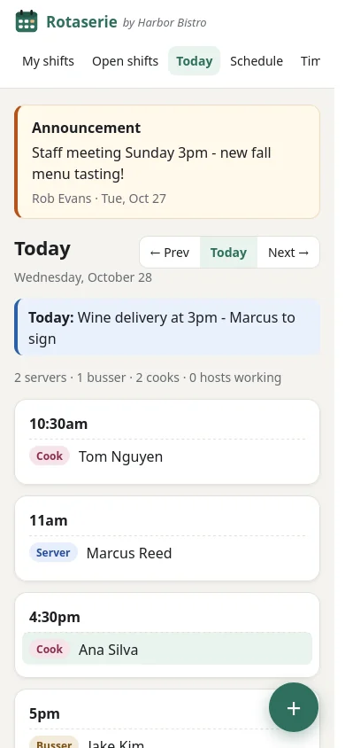
Restaurant scheduling · PC, iPhone and Android
Rotaserie shows every gap, overtime risk and time-off conflict while you build, then puts the schedule on every phone the moment you publish. Staff pick up shifts, swap, and ask for time off themselves. You just approve.
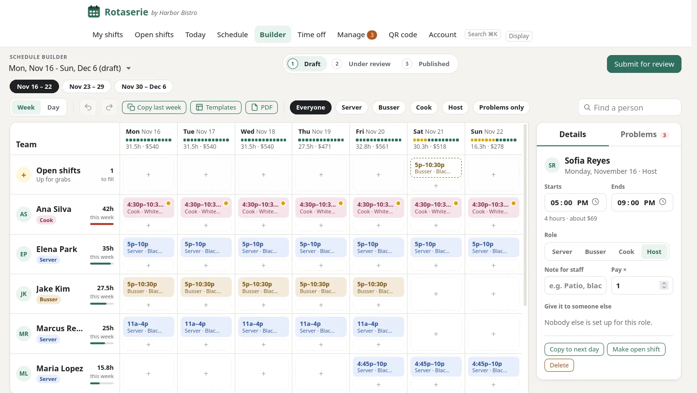
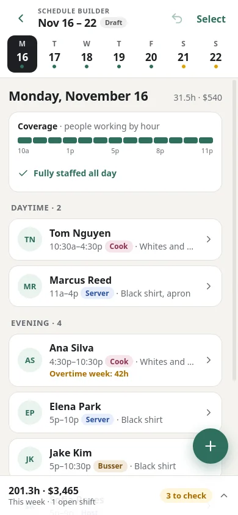
Copy last week or a saved template, then fix only what changed.
Time off, double-booking, overtime and short staffing flagged as you work.
Email and push alerts when you publish, and only to the people a change affects after that.
Hours, estimated cost and overtime per person and per day.
Schedule builder
People down the side, days across the top. Every change saves instantly, and Undo is always one click away.
Point at a day and click +. Your restaurant's regular shift times appear, with uniform notes, ready to drop in.
Move a shift to another person or day, or copy it. Shift-click to select several and move them together.
Pick a shift and see who's free, ranked by fit, with reasons like "15h under target" or "would go into overtime".
A bar under each day shows staffing hour by hour against what you need: green, amber or red.
Start from last week or a saved "Normal week". Anyone now on time off becomes an open shift automatically.
Ctrl Z, Ctrl Y, Del, Ctrl D for "copy to next day". Built for speed on a PC.
Live problem checks
Rotaserie checks the week every time you change it, and the Problems tab lists what needs attention, most urgent first. Click one to jump straight to the fix.
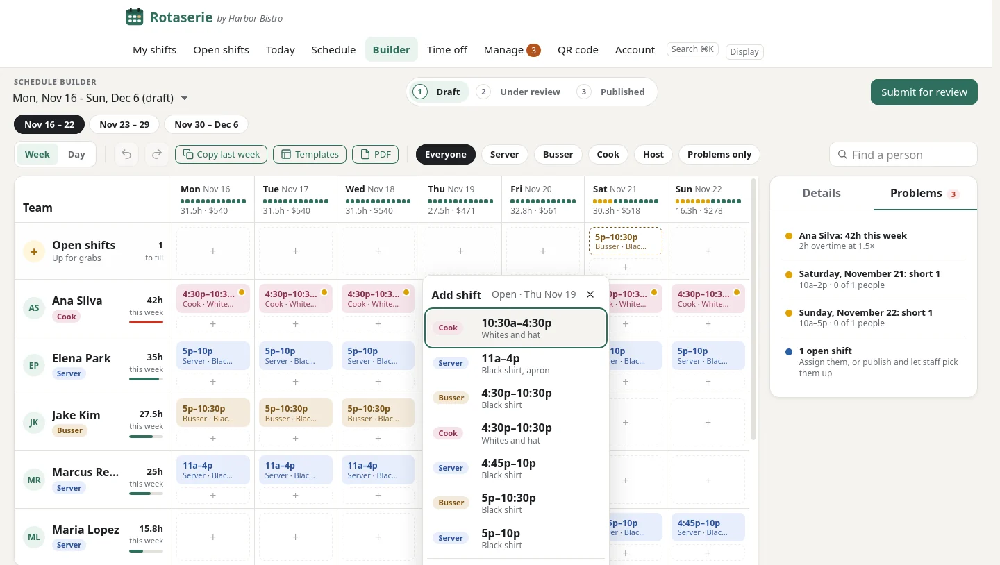
Day view
Every shift is a bar on a timeline. Drag it to move it in 15-minute steps, drag its edges to change the start or end, or drop it on someone else's row to hand it over.
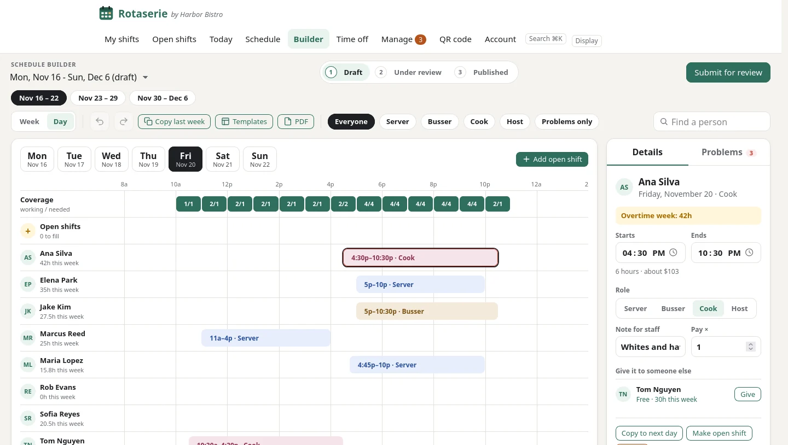
The builder, in your pocket
On a phone, the builder becomes a real app: swipe between days, tap a shift to edit it in a sheet that slides up, and use your phone's own time wheels. Press and hold to select several.
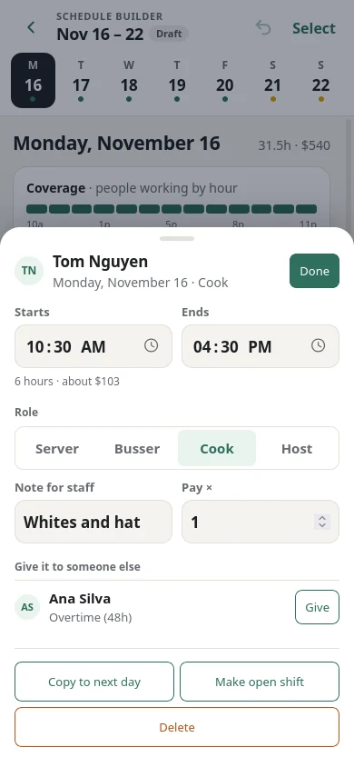
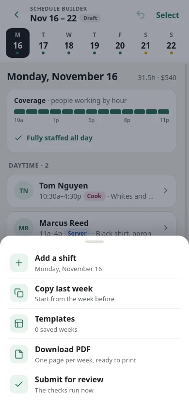
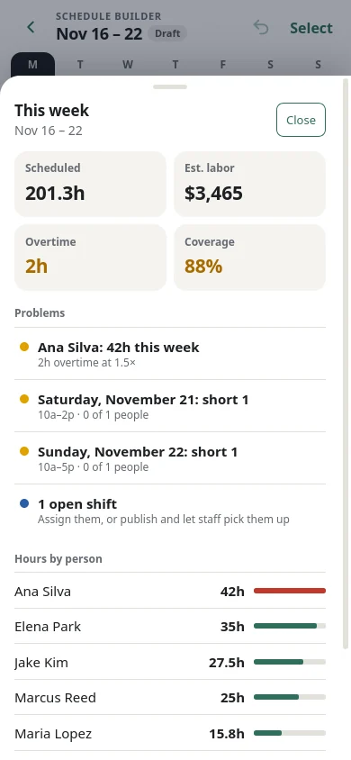
Review and publish
Submit for review and the checks run. If anything urgent is left, Rotaserie tells you and asks you to confirm. One tap publishes it to everyone by email and phone alert. Change the schedule later? Only the people affected are told.
For your staff
Staff open Rotaserie in their phone's browser and add it to their home screen. No app store, no download. It opens straight to their next shift.
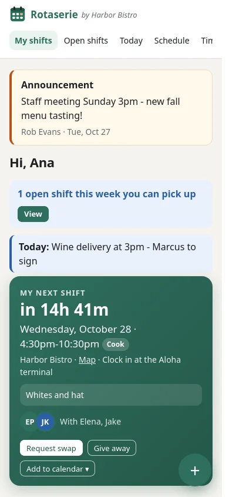
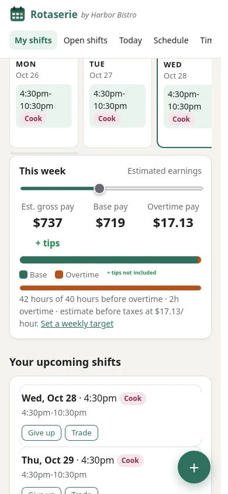
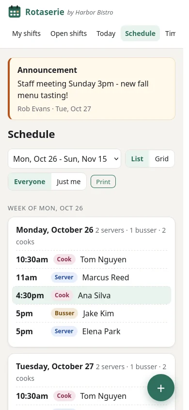
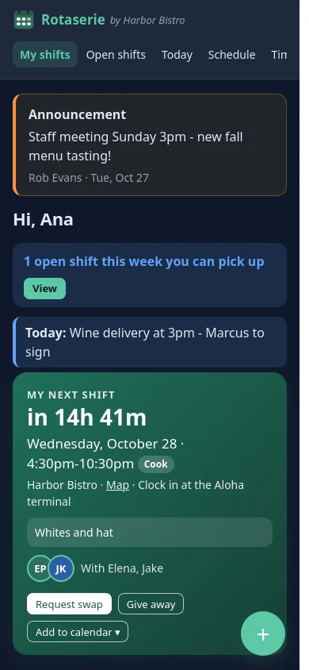
Countdown, role, uniform note, who they're working with, a map link, and buttons to swap or give it away.
One tap adds every shift to Google, Apple or Outlook calendar, and it stays up to date by itself.
Their own schedule and the restaurant's info stay readable without signal, and are erased when they log out.
Hours, base pay and overtime for any week, plus a weekly hours target they set themselves.
Push notifications for new schedules, changes, approvals and open shifts, with nothing sensitive in the alert itself.
Managers post a note, like a staff meeting or new menu, that shows at the top for everyone.
Open shifts and swaps
Can't make a shift? Staff give it away or ask a coworker to swap. Open shifts show up for everyone qualified, with the estimated pay and any overtime or double-shift warning before they claim it.
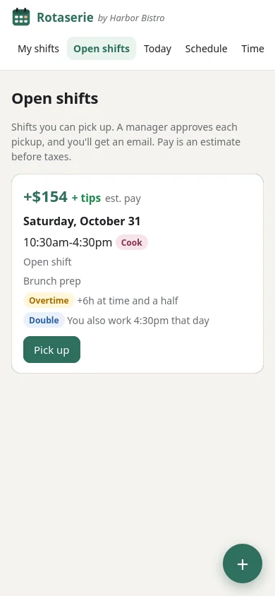
Time off, availability and approvals
Before you approve time off, Rotaserie shows exactly which shifts it affects and whether you'd drop below the staff you need. Approve or decline with a note in one tap.
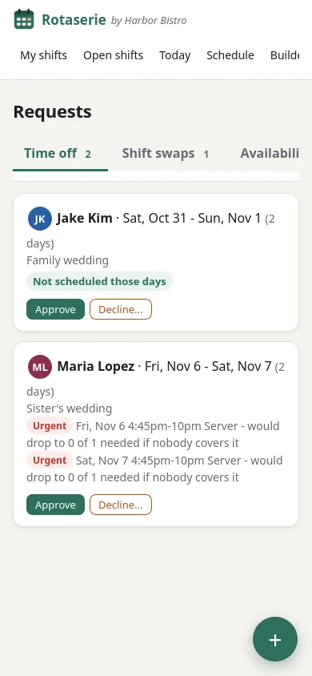
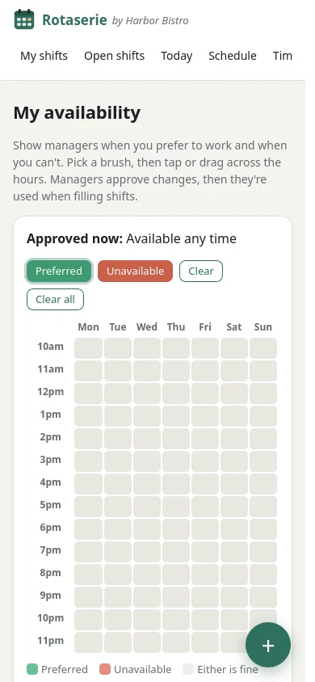
Manager dashboard
Today's staffing, open positions, pending requests and whether next week's schedule is ready, with the urgent items up top and pinned notes for the team.
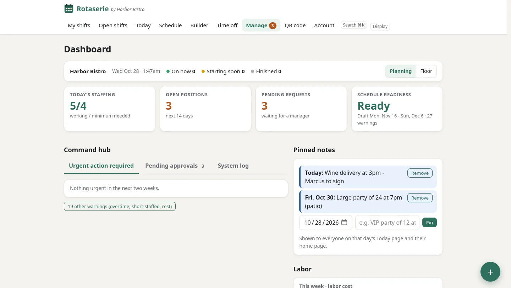
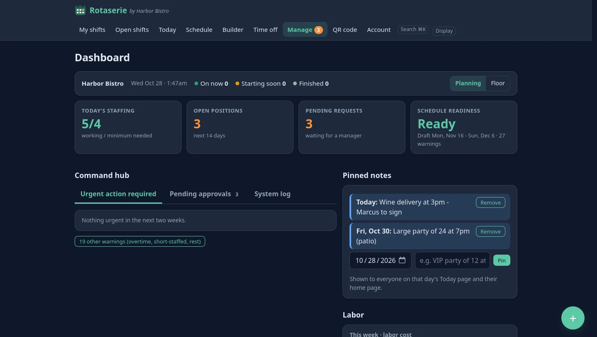
Urgent, pending approvals and a system log, each with one-click fixes like "suggest replacement".
"Wine delivery at 3pm", "party of 24 on the patio". Staff see them on that day's screens.
Press Ctrl K to jump to any person, page or action.
Who's on now, who's coming in and the day's notes, grouped by time. Perfect on a tablet by the host stand.

One page per week, names down the side, hours totaled, holidays and open shifts marked. Download it in one tap.
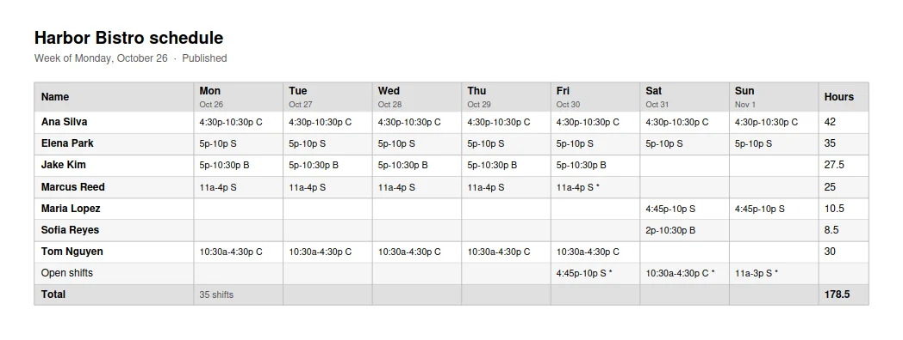
Print the poster for the back room. New hires scan it, add Rotaserie to their home screen, and they're in.
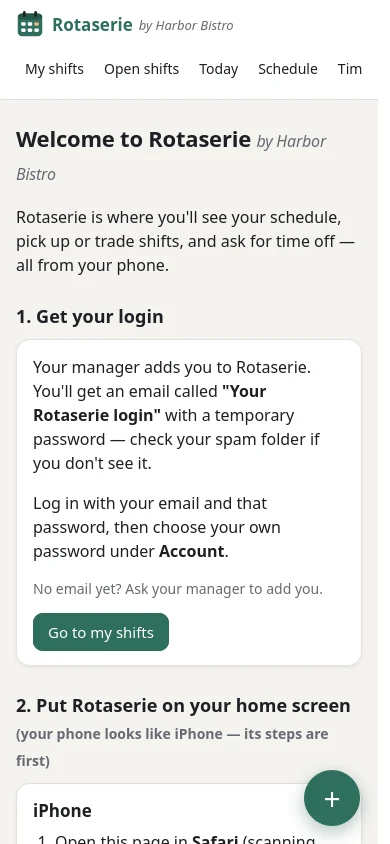
Make it yours
Server, Busser and Cook to start. Add Host, Bartender, Dishwasher or anything else, each with its own color. Set your overtime rule, time zone, pay rates and regular shift times.
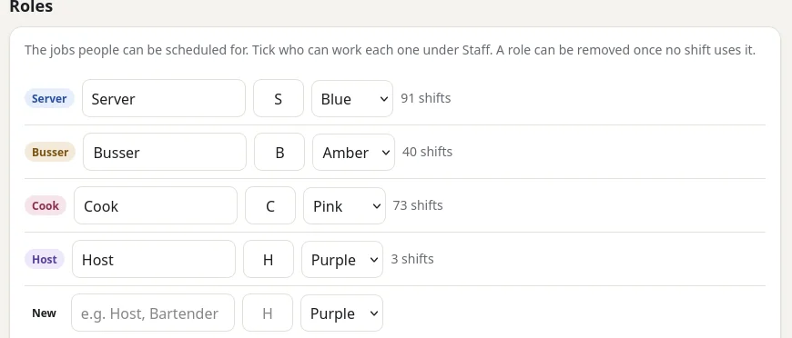
Day or night
Dark mode follows each phone's setting, or pick it yourself.
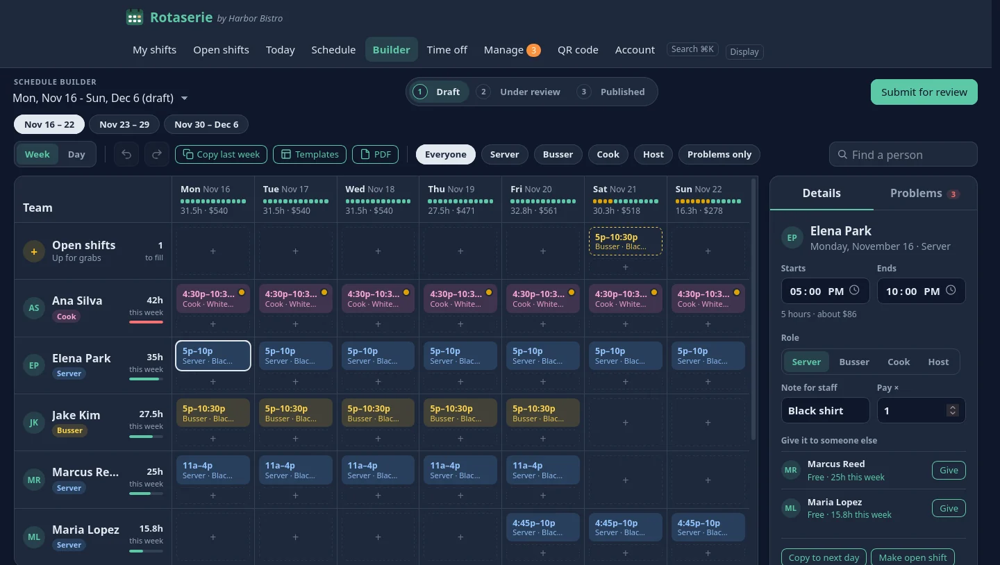
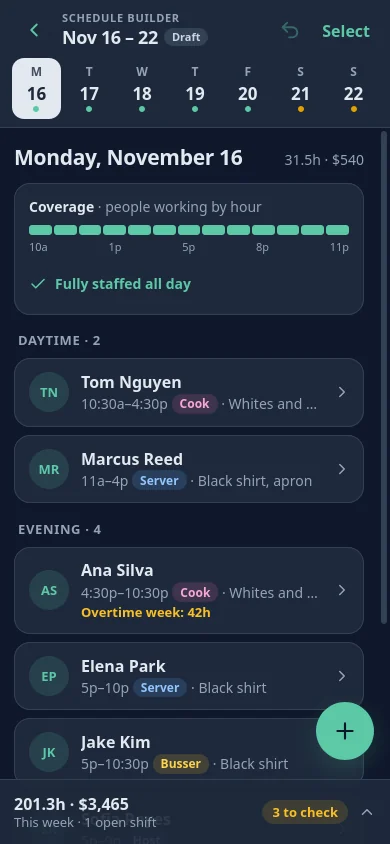
Reliability and security
The safeguards aren't settings you have to remember. They're built into how Rotaserie saves data.
The database itself refuses to save overlapping shifts for one person.
If two managers change the same shift, the second is asked to refresh instead of silently overwriting.
Every change is recorded in an activity log that can't be altered or deleted.
Emails and alerts are queued and retried, and never sent for a change that was undone.
Strong password rules, slow password scrambling, protection against cross-site tricks, and HTTPS.
Nightly backups, plus a one-click export of everything in a readable format.
Questions
No. Rotaserie runs in any phone's web browser on iPhone and Android. Staff add it to their home screen and it opens full-screen like an app, with push notifications.
No. Keep clocking in on your POS. Rotaserie handles the schedule, requests and communication around it.
Yes. Set each person's regular weekly shifts once, and every new schedule starts from them. After that, copy last week or a saved template.
Both can work at once. If they touch the same shift, the second person is asked to refresh, so nobody's change is lost.
Yes. Download a clean one-page-per-week PDF, or print straight from the Schedule page.
Get in touch and we'll set up your restaurant and walk you through pricing.
We'll set up your restaurant, roles and regular shifts with you, and your team can be on it the same day.